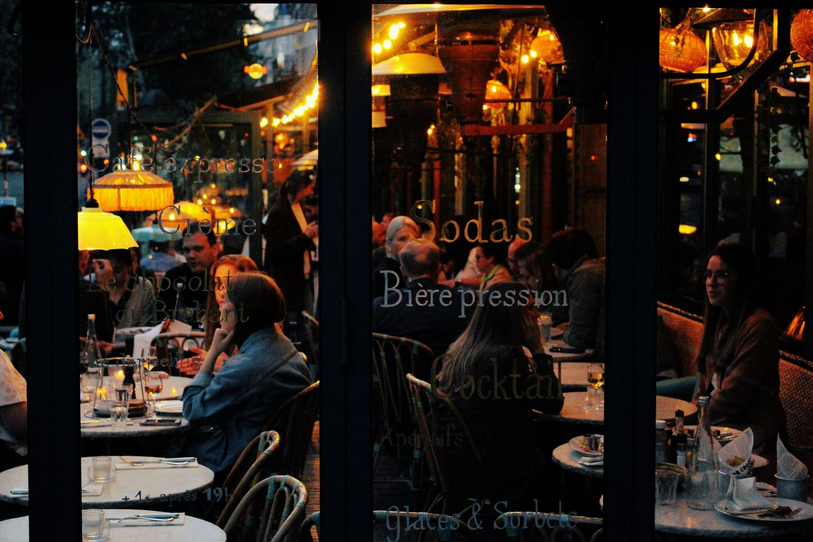

Dinner's free. The post is honest.
Local businesses across 37 founding markets are lining up to comp local creators a meal, a service or an experience. In exchange: one honest post, posted to a 48-hour standard, disclosed as comped. That is the whole deal, and it is a good one. And we don't rank you by followers: we rank you by how much of your audience actually lives here.

Posted by Friday.
What getting comped actually means
Comped means the business covers the experience and you cover it honestly on your feed. No invoices, no rate cards, no chasing payment. Here is the whole arrangement, in the open.
A business offers something real
A meal for two, a haircut, a class, a boat trip, a night's stay. The business posts the offer with exactly what it includes, and its value, before anyone claims it.
You claim it, visit, and post
Claim the offers you actually want, book in the app, show up like a real customer and redeem with your in-app code. Then post honestly within 48 hours, with a clear disclosure that the visit was comped.
The comp is the pay
On standard visits there is no cash fee on either side: the experience is the compensation. Headliners (15k+) are also first in line for paid cash campaigns on top of comps. Every delivered post also earns Momentum points for posting on time and engaging, and points raise your visibility to businesses.
Meals, services and experiences
If a local business sells it to walk-in customers, it can be a comp on SIGNL. The categories below are where offers come from.
Eat and drink
Dinner for two, chef's counters, brunches, coffee and bakery runs, cocktail experiences.
- Full-service restaurant
- Chef-driven / fine dining
- Brunch spot
- Steakhouse
- Seafood restaurant
- Sushi / omakase
- Ramen
- Tacos / Mexican
- Coffee shop / roastery
- Tea house
Look and feel
Cuts, color, nails, lashes, blowouts, massage and recovery services.
- Hair salon
- Barbershop
- Nail salon
- Lash & brow studio
- Makeup artist
- Med spa
- IV therapy lounge
- Dermatology / aesthetic clinic
Do and go
Classes, tours, rentals, attractions and stays. The experiences people post about anyway, covered.
- Boat tour / charter
- Fishing charter
- Kayak / paddleboard rental
- Boat / jet ski rental
- Food tour
- City / ghost tour
- Museum / aquarium
- Farm / pick-your-own
- Boutique gym
- CrossFit / HIIT studio
- Yoga studio
Four rules, enforced fairly
Disclose, every time
Every comped post carries a clear disclosure that the visit was comped, like #gifted, as FTC guidelines require. It takes two seconds and it protects your credibility.
Honest means honest
Post your real experience in your own voice. No business can require a positive post, and a business that pressures a creator is removed from the platform.
48 hours is the standard
The post should be live within 48 hours of the visit, and posting inside it is what earns Momentum. Up to a week at the outside still counts. Claimed a visit and posted nothing inside the week? That costs roster standing, and repeat no-shows lose their spot.
Your record is your resume
Every delivered post builds your reliability record and Local Impact Score. Businesses see it before they choose, so a clean record gets you picked first.
Who qualifies, by tier
Anyone can apply and self-select their band. Comps are open to every tier; the Headliners band adds eligibility for paid cash campaigns.
- Everyday people with a local following
- Comp only
- Perfect first step into local posting
- Regular local posters, the roster's sweet spot
- Comp plus roster perks
- Priority access to new businesses
- Established local creators
- Comp plus eligibility for paid hero campaigns
- First pick of grand openings and launches
Under 500 followers, or just starting out? Apply anyway. Your tier is set by your follower count, and it moves up as you grow. What matters most is not the number, it is that your audience is actually local and actually engages. Pick your band honestly when you sign up.
Questions, answered straight
How do I get comped on SIGNL?
Apply free for your city's founding roster in the app. When your market opens, local businesses post comp offers: a meal for two, a service, an experience. You claim the ones you want, visit like a real customer, and post honestly about it within 48 hours, with a clear disclosure that the visit was comped.
Does it cost anything to join?
No. SIGNL is free for creators. Always. Businesses pay the platform. You never pay to join, to list, or to get booked. Your compensation on standard visits is the comp itself: the meal, service or experience the business provides. The only cut SIGNL ever takes is 3 percent of a paid rate you set yourself, if a business books you at it. You keep the other 97 percent.
Do I have to post something positive?
Never. Honest posts only; that is the entire product. Businesses cannot require a positive post or review, and a business that pressures a creator is removed from the platform. Post your real experience, in your own voice.
What exactly do I have to post, and how fast?
1 post or reel plus 1 story that shares the post about the visit, posted to a 48-hour standard, with up to a week at the outside, with a clear disclosure that it was comped (for example #gifted), as FTC guidelines require. If a claimed visit gets no post inside the week, the business gets a replacement visit and the creator loses roster standing; repeat no-shows lose their spot.
Can I get paid cash, or is it only comps?
Standard visits pay in comps. Creators in the Headliners band (15,000+ followers) are also eligible for paid cash campaigns when businesses run them, on top of comps. Any creator, at any tier, can also set a paid rate on their profile: when a business books you directly at your rate, you keep 97 percent of it, because SIGNL takes only 3 percent of the creator's rate. Growing into that band is one reason your reliability record matters.
My city is not open yet. Is it worth signing up now?
Yes. Founding rosters are reviewed in sign-up order, founding status never expires, and markets open in waves over the next 30 to 90 days as rosters fill. Signing up now is what puts you at the front of your city's line. If your city is not a listed market at all, your sign-up starts its list.
Claim your founding spot
Sign up now to be a founding creator, right in the SIGNL app. Founding profiles are reviewed in sign-up order across the 37 founding markets, your founding priority never expires, and markets open over the next 30 to 90 days as each roster completes.
Sign-ups live in the SIGNL app
Create your account and build your founding profile in a few minutes: your market and home city, your handles, your tier band and what you post about. It is free, and it always will be for creators. New to the whole idea? See why anyone can be a creator. Posting from Richmond? See get comped in Richmond.
Create my founding creator account
Already signed up? Sign in at app.joinsignl.com